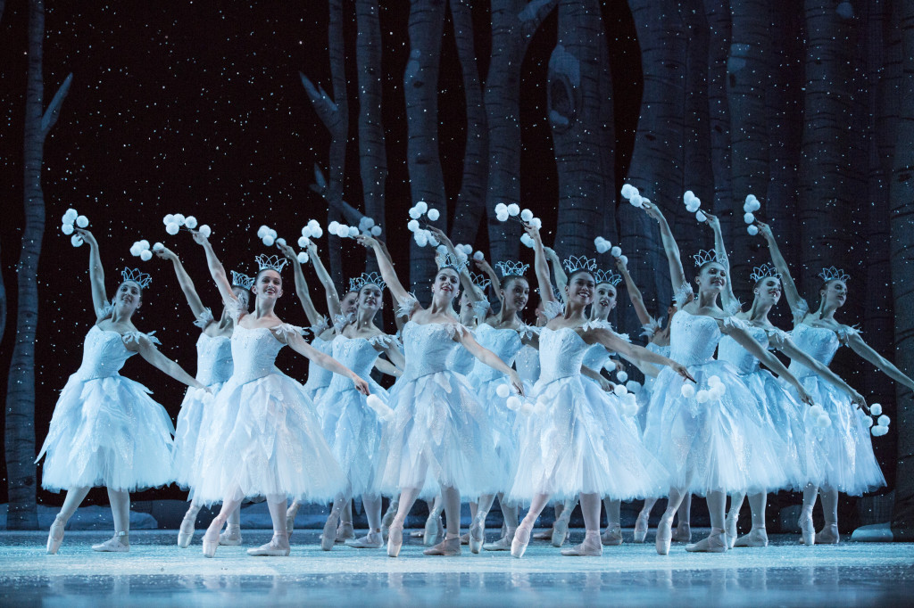
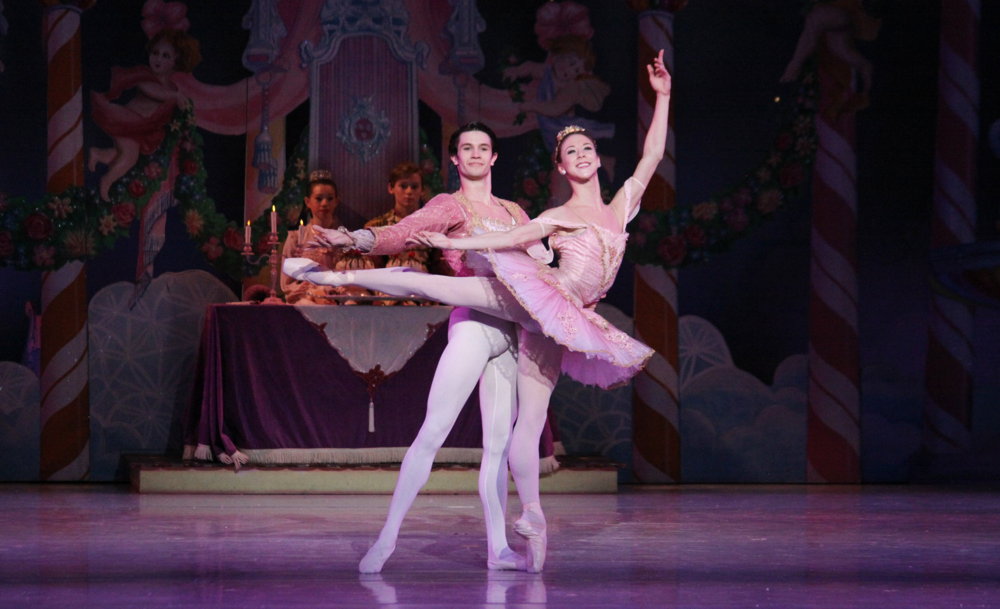

Each year my friends from dance and I audition for the Nutcracker Ballet together. It has now been my fourth year auditioning with my friends and has now become a Christmas tradition. For Nutcracker I enjoy creating new friendships with girls from other studios, the vibrant music, sharing meals together between shows, doing each others hair and makeup, and of course dancing. Prior years I've danced in the Mother Ginger Scene, Party Scene, the Russian Dance, and this year I got the opportunity to be casted as Clara- one of Nutcracker's main roles. A christmas without Nutcracker would never feel the same to my friends and I.

Every February, my studio and many other studios join together to preform dances to our friends and family. Many studios are from downtown Chicagos and other various suburbs of Illinois. Most of these dances consist of a ballet dance and a contemporary dance surrounding a certain theme. The performances are different everyday and is almost like a dance banquet where we showcase our dances. The dances also eat meals together and converse in between performances.